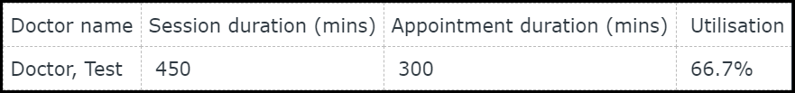
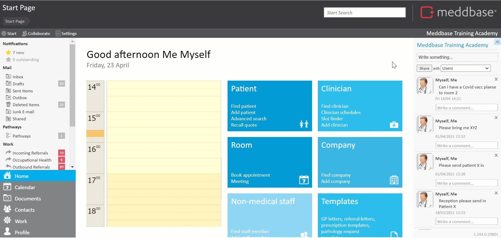
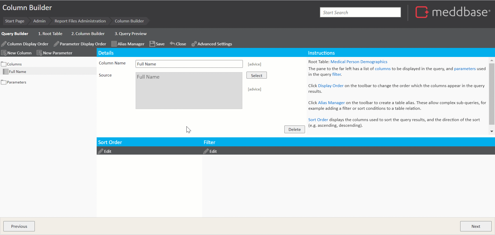
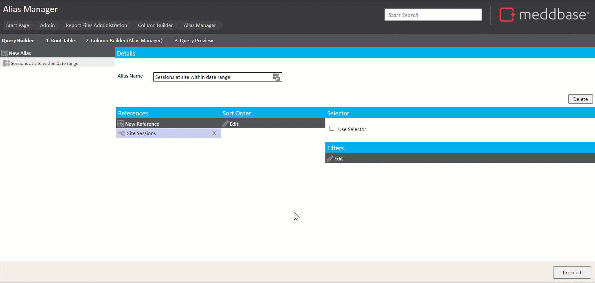
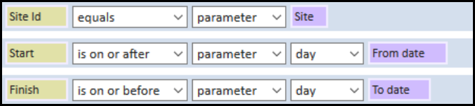
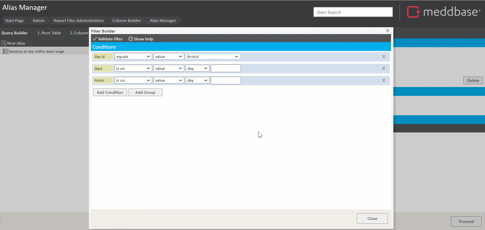
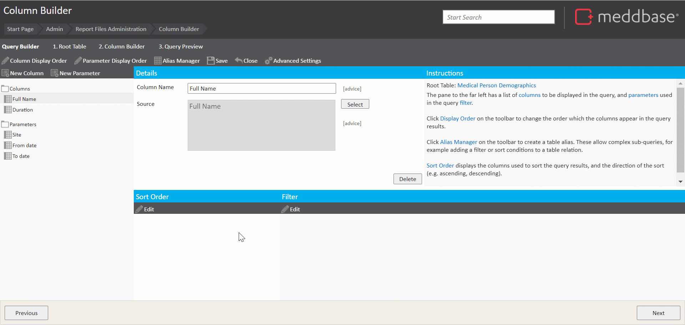
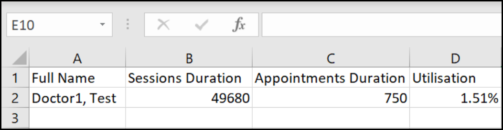

This article will walk you through the process of building a report to show the percentage of time in clinic that each doctor spends seeing patients. You'll include filters to show utilisation at a particular site and within a particular date range.
You'd like the report to look something like this:

In order to create this, you'll need to extract the first three columns of data from a report, then add the fourth column in Excel.
The complexity and time required here are high, as this is an advanced report that includes filters, parameters and alias tables.
Click here for other report examples.
The process of building a report can be broken down into the following steps:
1. From the Start Page navigate to Admin > Report management.*
2. Click New report query to open the Query Builder.
3. Select Medical Person Demographics from the list of tables as the Root Table.**
*Building reports requires access to the Admin section.
** Selecting a Root Table determines what will be displayed in each Row of your report e.g. selecting Invoices as the root table will result in a report displaying an invoice in each row.
Click here for a detailed article on selecting a root table.
4. Click Next to open the Column Builder.
5. In the upper left corner, click New Column.
6. In the Select Column dialogue that appears, expand the Column folder to add columns to the report.*
For this report you want to include columns that return the following information**:
*Holding down the Ctrl key on your keyboard allows adding multiple columns to a report in a sequence.
** Some of the desired information will be obtained from columns that do not belong to our root table. They are available in linked tables.
7. From the Columns folder, add the following:

Aliases are used when you have a column with multiple potential values, such as those found in one-to-many relations. (Click here for more information on table relations).
In order to get the session duration, you'll need to set up an alias table. The alias table will allow us to pick a site and a date range before calculating the total duration of each doctor's sessions.
To begin creating an alias:-
* An alias needs a root table on which to filter. An alias can be thought of as a sub-query or a custom table.

In this example, you'll need to add filters to your alias table to restrict the sessions to a particular site and date range. First, you'll add a condition to list sessions at one site only. To do this:-
Next, you'll add conditions to restrict the sessions to a particular date range. You'll need two conditions - one that restricts them to those that start after a certain date, then another to restrict them to those that end before a certain date.
7. For the first condition:
8. For the second condition:

Ideally, you'd want the user to be able to input a site and date range to filter by, so that they can re-run the report for different criteria.
To do this, you’ll need to parameterise your existing filters. Using parameters lets you choose which values to include in your filter conditions.
In the Filter Builder, for each condition:
The parameter name is what the user will see next to the field where they need to input a value, so it should be descriptive. You would choose Site for the first condition, then From Date and To Date for the next two conditions. Parameters are mandatory by default, which means the user has to include a value before they can run the report. You can make parameters optional, which means that the report will run without those filters unless specified, or provide a default value
For this example, set up the parameters as shown below:

7. Click Proceed to exit the Alias Manager.

You can check if our alias is working as expected by adding a column from it to our report and previewing the results. The alias table is available at the bottom of the list of tables:
Next, you'll need to set up a second alias table to get the total duration of each doctor's appointments.
Using the previous alias table as a guide, set up a second alias table as follows:
Then, add 3 filter conditions to only return appointments at a particular site, within a particular date range (You can reuse the Site, From date and To date parameters that were set up earlier). Furthermore, include 2 more conditions to filter out cancelled and not arrived appointments (this ensures that only time spent actually seeing patients is included). To do this:-
1. Click Edit under Filters to open the Filter Builder:
2. For the first condition:
3. For the second condition:
4. For the third condition:
5. For the fourth condition:
6. For the fifth condition:
The parameters are now applied to the conditions.
Now that's all set up, close the filter builder and click Proceed to exit the alias manager.
Having set up both required alias tables, you will use the 2nd one in the report query, in the manner described in the previous chapter.
The 2nd alias table is available at the bottom of the list of tables. To use it:-
1. Click New Column in the upper left corner.
2. Scroll down to the bottom of the list of tables and expand the Appointments at site within date range alias table.
3. Choose the Duration* column from the alias table and click Select.
* You may want to rename both Duration columns to differentiate them from one another e.g. Sessions duration/Appointments duration
5. Enter some dates and click OK. (The report should list each doctor with the total duration of their sessions in minutes).
6. Click Previous in the bottom left-hand corner to return to the report query builder.
7. Click Next in the bottom right-hand corner to preview the results (You should be prompted to select a site and a date range; your report should include a new column for the appointment duration)

To calculate the percentage of time spent seeing patients, you will need to export the results to Excel. To do this:-
